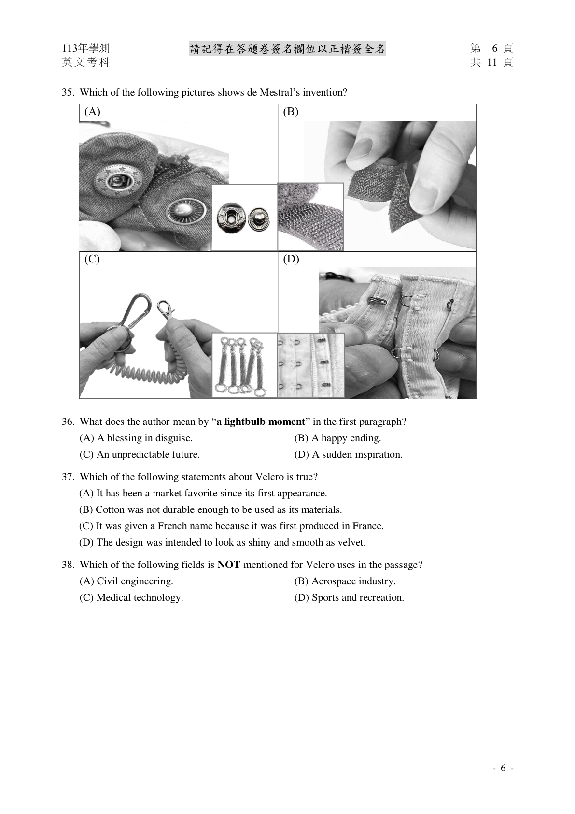
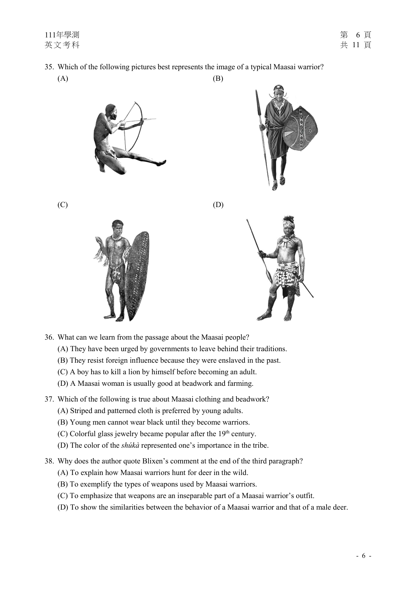

【官方原題｜sourceType: official】
115 學測 Q35｜完整歷屆題卡
完整題組／文章上下文
五 、 閱 讀 測 驗 （ 占 24分 ）
說明︰第35題至第46題為單選題，每題2分。
第 35 至 38 題為題組
In March 2022, the Endurance—the lost vessel of the famed polar explorer Ernest Shackleton—was
found in Antarctica, 107 years after it sank. The news made headlines around the world, not only for the
incredible achievement of the search team, but because the discovery marked the final chapter in a
legendary story of extraordinary courage and perseverance.
On August 4, 1914, Sir Ernest Shackleton, along with a skilled crew of 27, set sail on the Endurance
toward the South Pole, hoping to make the first land crossing over Antarctica. From Plymouth, UK, the
team arrived in Buenos Aires, Argentina, and on November 5 reached South Georgia Island, the last
settlement of civilization en route to Antarctica. There, the real challenge began. Two days after leaving
South Georgia in December, the Endurance encountered floating ice, and was soon completely trapped in
pack ice.
The worthy vessel held up for nine months, drifting down south slowly and then pushed northward
by the ice. Gradually, the pressure from the ice buckled the planks. Freezing water rushed in and
exacerbated the situation. On October 27, 1915, Shackleton ordered his crew to abandon the ship,
pitching tents on the ice a mile and a half away. Weeks later, they watched the Endurance sink beneath
the Weddell Sea.
The next five months, the crew camped out on the pack ice as it drifted north, surviving on penguins,
seals, and seaweed. Finally, the ice broke up enough for them to escape in lifeboats. For seven days, they
sailed more than a hundred miles to the uninhabited Elephant Island. But the crew couldn’t survive long
there. So, Shackleton made a dangerous attempt to get help: With five crew members, he sailed 800 miles
over 16 days across freezing, stormy seas to South Georgia Island. Then the group hiked for 36 hours
across the island to reach a whaling station.
Help was almost at hand, but ice and bad weather hindered their return. On August 30, 1916,
Shackleton finally got back to Elephant Island with a ship big enough to rescue the rest of his men. All
the members of the expedition team survived, but the Endurance remained lost under the sea until its
discovery in 2022.
35. What is this passage mainly about?
(A) A renowned Antarctic explorer.
(B) The extreme weather in Antarctica.
(C) A challenging voyage to Antarctica.
(D) The amazing discovery of a sunken ship.
36. Which of the following idioms is closest in meaning to “exacerbated the situation” in the third
paragraph?
(A) Broke the ice. (B) Cost an arm and a leg.
(C) Missed the boat. (D) Added fuel to the fire.
英文考科 共 11 頁
37. According to the passage, which of the following is true about Shackleton and his Antarctic
expedition?
(A) His journey lasted more than two years.
(B) He was the first man to cross over the Antarctic.
(C) His team camped out on Elephant Island for five months.
(D) He sent five crew members on a lifeboat to get help from a whaling station.
38. Which of the following shows the correct route of the Endurance after leaving South Georgia?
(A) (B)
South Georgia South Georgia
Elephant Island Elephant Island
WEDDELL WEDDELL
PACIFIC SEA PACIFIC
OCEAN ATLANTIC SEA ATLANTIC
OCEAN
OCEAN OCEAN
ANTARCTICA ANTARCTICA
(C) (D)
South Georgia South Georgia
Elephant Island Elephant Island
WEDDELL WEDDELL
PACIFIC SEA PACIFIC
OCEAN SEA
ATLANTIC OCEAN ATLANTIC
OCEAN OCEAN
ANTARCTICA ANTARCTICA
共 11 頁 英文考科
第 39 至 42 題為題組
In many old castles in Europe, visitors often find a fantastic spiral staircase, which provides a
captivating focal point as it winds up the building. This prominent structure actually has a long and rich
heritage.
In the Old Testament, reference is made to spiral staircases in the Temple of Solomon, suggesting
that they were already in use by around 1,000 BC. The oldest spiral staircase still standing today is at
Trajan’s Column in Rome. The staircase was built in 113 AD, with a total of 185 steps carved in stone
and marble. Around this time, spiral staircases began to find much wider use in Roman architecture and
across Europe.
Throughout the Middle Ages, winding staircases became a well-established feature of European
castles, mainly for their advantages in helping to defend against attackers. To begin with, these staircases
were quite narrow, so attackers would have to ascend one at a time, making it impossible to launch a mass
attack. Also, the stairs were designed to turn clockwise upwards. This means that ascenders would have
their right hand tight against the narrowest part of the staircases, close to the central pole, and as a result
were unable to use their sword effectively. The attackers’ challenge was further complicated by the
uneven steps of the staircase, often strategically designed by the castle owners. The defenders, living in
the castles, were familiar with the stair pattern and could retreat up them very swiftly; while the attackers
were much more likely to stumble and fall, particularly in the dimly lit confines of the staircase.
Being associated with medieval castles and kings, spiral staircases gradually won popularity in
European architecture, with new materials emerging to cope with customers’ needs. In Victorian times,
cast iron spiral staircases were popular for public buildings and homes for the rich. In the latter half of the
20th century, steel frames became cost-effective, and thus affordable for a much wider staircase market.
Then, steel spiral staircases as fire escape stairs appeared in many buildings. Today, spiral staircases
come in a wide variety of materials: steel, wood, concrete, and recently even glass. The timeless appeal of
their classical design makes spiral staircases a much-desired feature in luxury homes, offices, and public
buildings nowadays.
39. Which question can the passage answer?
(A) Where was the first spiral staircase constructed?
(B) Who was the first designer of the spiral staircase?
(C) What is the world’s most famous spiral staircase?
(D) Why is the spiral staircase popular in modern times?
40. What does “them” in the third paragraph refer to?
(A) Stairs. (B) Confines. (C) Attackers. (D) Defenders.
41. According to the passage, which is a correct time sequence of the materials used in making spiral
staircases?
(A) stone iron steel glass (B) stone wood iron steel
(C) iron marble wood glass (D) marble wood stone concrete
42. Which of the following statements can be inferred about spiral staircases in the Medieval Ages?
(A) The staircase was too narrow to allow any quick retreat.
(B) The clockwise design favored right-handed castle defenders.
(C) The uneven steps made it easier to ascend than descend the stairs.
(D) The staircase was dark enough for defenders to hide from attackers.
英文考科 共 11 頁
第 43 至 46 題為題組
Have you ever wondered why north comes at the top of a map? Well, north may seem a natural
choice for the top spot today, but that wasn’t always the case.
Documents from ancient times indicate that many maps in early ages were pointing to the east,
where the sun rose. In ancient India, for example, maps were most likely oriented to the east. Though
there is no physical evidence to support this, the word dakshina “south” in Indian languages also means
“right,” suggesting that ancient Indians were oriented toward the east, and therefore south was on their
right-hand side. Ample evidences from the Old Testament also suggest that east was at the top of maps in
pre-Biblical and Biblical eras, a reason why east is still referred to as the “Orient” today.
In the oldest surviving maps, south is at the top, and north points down. Early Egyptian maps
showed south on top, most likely because the Nile, vital to Egyptian livelihood, originated in the south.
As rivers were believed to flow downward, “up” was therefore south. Map makers in Arabia also drew
maps with south on top since the earliest Muslims lived north of Mecca, and a south-oriented map would
show the followers looking up toward their holy city.
The preference for north arose during the European age of exploration. At the time, sailors relied on
the North Star to find their way across the Mediterranean and later the Atlantic. By the 16th century, when
Europe’s search for trading routes was at its peak, maps became Eurocentric, with north on top. The
expansion of European imperialism in the following centuries further established the “north up” practice
as the standard.
Today, map orientation is taking on a new perspective. In perhaps our most common interaction
with maps—the use of GPS systems on our phones and in our cars, directions have ceased to be as
important. The layouts are dynamic, oriented toward our travel path.
So, perhaps the north-on-top practice is less a rule and more a blip. After centuries of technological
advancements, it seems we’ve ended up right where we began in ancient times: with ourselves in the
middle, and our destinations at the top.
43. What is the passage mainly about?
(A) Why east is referred to as the “Orient.”
(B) How maps differ from GPS in function.
(C) How map orientation evolved over time.
(D) Why maps were important during the age of exploration.
44. What does “this” refer to in the second paragraph?
(A) The word dakshina. (B) Physical evidence.
(C) Ancient India. (D) East-orientation of maps.
45. Which of the following is closest in meaning to “a blip” in the last paragraph?
(A) A temporary state. (B) An urgent need.
(C) A critical decision. (D) An advanced system.
46. Which of the following statements is true?
(A) Sailors took the North Star as their final destination.
(B) The GPS system has a fixed direction for orientation.
(C) South was placed at the top of maps in the pre-Biblical era.
(D) Old Islamic maps put south at the top for religious purposes.
共 11 頁 英文考科題幹：What is this passage mainly about?
- A. A renowned Antarctic explorer.
Shackleton 是主角，但文章不是人物傳記。 - B. The extreme weather in Antarctica.
extreme weather 只是旅程困難的一部分。 - C. A challenging voyage to Antarctica.
涵蓋整篇 voyage、困冰、棄船、求援、救援。 - D. The amazing discovery of a sunken ship.
只對應開頭與結尾的 sunken ship discovery，範圍過小。
查看答案與完整解析
題幹：Which of the following idioms is closest in meaning to “exacerbated the situation” in the third
paragraph?
- A. Broke the ice.
選項 A「Broke the ice.」：放回「Which of the following idioms is closest in meaning to “exacerbated the situation” in the third
paragraph?」後，與本題的原文證據、指涉或範圍不一致。 - B. Cost an arm and a leg.
選項 B「Cost an arm and a leg.」：放回「Which of the following idioms is closest in meaning to “exacerbated the situation” in the third
paragraph?」後，與本題的原文證據、指涉或範圍不一致。 - C. Missed the boat.
選項 C「Missed the boat.」：放回「Which of the following idioms is closest in meaning to “exacerbated the situation” in the third
paragraph?」後，與本題的原文證據、指涉或範圍不一致。 - D. Added fuel to the fire. 英文考科
選項 D「Added fuel to the fire. 英文考科 」：放回「Which of the following idioms is closest in meaning to “exacerbated the situation” in the third
paragraph?」後，與句法位置、固定搭配、語意與原文線索一致。
查看參考答案與解析
答案：D
Evidence：直接證據：題幹「Which of the following idioms is closest in meaning to “exacerbated the situation” in the third
paragraph?」與完整題組上下文共同限定答案。
Skill：reading Collocations：題幹前後搭配與同義改寫
【官方原題｜sourceType: official】
115 學測 Q37｜完整歷屆題卡
題幹：According to the passage, which of the following is true about Shackleton and his Antarctic
expedition?
- A. His journey lasted more than two years.
日期相隔超過兩年，因此 His journey lasted more than two years。 - B. He was the first man to cross over the Antarctic.
原文只有希望 first crossing，沒有完成的證據。 - C. His team camped out on Elephant Island for five months.
五個月是在 pack ice，不是在 Elephant Island。 - D. He sent five crew members on a lifeboat to get help from a whaling station.
Shackleton 親自與五名船員同行，不是派五人去。
查看答案與完整解析
答案：A
Evidence：1914-08-04 出發；1916-08-30 回到 Elephant Island。
Skill：evidence-based inference Collocations：題幹前後搭配與同義改寫
教學：Evidence: 1914-08-04 出發；1916-08-30 回到 Elephant Island。→ Small step: 時間超過兩年。→ Valid inference: His journey lasted more than two years.
【官方原題｜sourceType: official】
115 學測 Q38｜完整歷屆題卡
題幹：Which of the following shows the correct route of the Endurance after leaving South Georgia?
- A. 官方題組原文見上方
選項 A「」：放回「Which of the following shows the correct route of the Endurance after leaving South Georgia?」後，與本題的原文證據、指涉或範圍不一致。 - B. South Georgia South Georgia Elephant Island Elephant Island WEDDELL WEDDELL PACIFIC SEA PACIFIC OCEAN ATLANTIC SEA ATLANTIC OCEAN OCEAN OCEAN ANTARCTICA ANTARCTICA
選項 B「South Georgia South Georgia Elephant Island Elephant Island WEDDELL WEDDELL PACIFIC SEA PACIFIC OCEAN ATLANTIC SEA ATLANTIC OCEAN OCEAN OCEAN ANTARCTICA ANTARCTICA」：放回「Which of the following shows the correct route of the Endurance after leaving South Georgia?」後，與本題的原文證據、指涉或範圍不一致。 - C. 官方題組原文見上方
選項 C「」：放回「Which of the following shows the correct route of the Endurance after leaving South Georgia?」後，與句法位置、固定搭配、語意與原文線索一致。 - D. South Georgia South Georgia Elephant Island Elephant Island WEDDELL WEDDELL PACIFIC SEA PACIFIC OCEAN SEA ATLANTIC OCEAN ATLANTIC OCEAN OCEAN ANTARCTICA ANTARCTICA
選項 D「South Georgia South Georgia Elephant Island Elephant Island WEDDELL WEDDELL PACIFIC SEA PACIFIC OCEAN SEA ATLANTIC OCEAN ATLANTIC OCEAN OCEAN ANTARCTICA ANTARCTICA 」：放回「Which of the following shows the correct route of the Endurance after leaving South Georgia?」後，與本題的原文證據、指涉或範圍不一致。
查看答案與完整解析
題幹：Which question can the passage answer?
- A. Where was the first spiral staircase constructed?
選項 A「Where was the first spiral staircase constructed?」：放回「Which question can the passage answer?」後，與本題的原文證據、指涉或範圍不一致。 - B. Who was the first designer of the spiral staircase?
選項 B「Who was the first designer of the spiral staircase?」：放回「Which question can the passage answer?」後，與本題的原文證據、指涉或範圍不一致。 - C. What is the world’s most famous spiral staircase?
選項 C「What is the world’s most famous spiral staircase?」：放回「Which question can the passage answer?」後，與本題的原文證據、指涉或範圍不一致。 - D. Why is the spiral staircase popular in modern times?
選項 D「Why is the spiral staircase popular in modern times?」：放回「Which question can the passage answer?」後，與句法位置、固定搭配、語意與原文線索一致。
查看答案與完整解析
題幹：What does “them” in the third paragraph refer to?
- A. Stairs.
選項 A「Stairs.」：放回「What does “them” in the third paragraph refer to?」後，與句法位置、固定搭配、語意與原文線索一致。 - B. Confines.
選項 B「Confines.」：放回「What does “them” in the third paragraph refer to?」後，與本題的原文證據、指涉或範圍不一致。 - C. Attackers.
選項 C「Attackers.」：放回「What does “them” in the third paragraph refer to?」後，與本題的原文證據、指涉或範圍不一致。 - D. Defenders.
選項 D「Defenders.」：放回「What does “them” in the third paragraph refer to?」後，與本題的原文證據、指涉或範圍不一致。
查看答案與完整解析
題幹：According to the passage, which is a correct time sequence of the materials used in making spiral
staircases?
- A. stone iron steel glass
選項 A「stone iron steel glass」：放回「According to the passage, which is a correct time sequence of the materials used in making spiral
staircases?」後，與本題的原文證據、指涉或範圍不一致。 - B. stone wood iron steel
選項 B「stone wood iron steel」：放回「According to the passage, which is a correct time sequence of the materials used in making spiral
staircases?」後，與句法位置、固定搭配、語意與原文線索一致。 - C. iron marble wood glass
選項 C「iron marble wood glass」：放回「According to the passage, which is a correct time sequence of the materials used in making spiral
staircases?」後，與本題的原文證據、指涉或範圍不一致。 - D. marble wood stone concrete
選項 D「marble wood stone concrete」：放回「According to the passage, which is a correct time sequence of the materials used in making spiral
staircases?」後，與本題的原文證據、指涉或範圍不一致。
查看參考答案與解析
答案：B
Evidence：直接證據：題幹「According to the passage, which is a correct time sequence of the materials used in making spiral
staircases?」與完整題組上下文共同限定答案。
Skill：reading Collocations：題幹前後搭配與同義改寫
【官方原題｜sourceType: official】
115 學測 Q42｜完整歷屆題卡
題幹：Which of the following statements can be inferred about spiral staircases in the Medieval Ages?
- A. The staircase was too narrow to allow any quick retreat.
選項 A「The staircase was too narrow to allow any quick retreat.」：放回「Which of the following statements can be inferred about spiral staircases in the Medieval Ages?」後，與本題的原文證據、指涉或範圍不一致。 - B. The clockwise design favored right-handed castle defenders.
選項 B「The clockwise design favored right-handed castle defenders.」：放回「Which of the following statements can be inferred about spiral staircases in the Medieval Ages?」後，與句法位置、固定搭配、語意與原文線索一致。 - C. The uneven steps made it easier to ascend than descend the stairs.
選項 C「The uneven steps made it easier to ascend than descend the stairs.」：放回「Which of the following statements can be inferred about spiral staircases in the Medieval Ages?」後，與本題的原文證據、指涉或範圍不一致。 - D. The staircase was dark enough for defenders to hide from attackers. 英文考科
選項 D「The staircase was dark enough for defenders to hide from attackers. 英文考科 」：放回「Which of the following statements can be inferred about spiral staircases in the Medieval Ages?」後，與本題的原文證據、指涉或範圍不一致。
查看答案與完整解析
答案：B
Evidence：直接證據：題幹「Which of the following statements can be inferred about spiral staircases in the Medieval Ages?」與完整題組上下文共同限定答案。
Skill：reading Collocations：題幹前後搭配與同義改寫
【官方原題｜sourceType: official】
115 學測 Q43｜完整歷屆題卡
題幹：What is the passage mainly about?
- A. Why east is referred to as the “Orient.”
選項 A「Why east is referred to as the “Orient.”」：放回「What is the passage mainly about?」後，與本題的原文證據、指涉或範圍不一致。 - B. How maps differ from GPS in function.
選項 B「How maps differ from GPS in function.」：放回「What is the passage mainly about?」後，與本題的原文證據、指涉或範圍不一致。 - C. How map orientation evolved over time.
選項 C「How map orientation evolved over time.」：放回「What is the passage mainly about?」後，與句法位置、固定搭配、語意與原文線索一致。 - D. Why maps were important during the age of exploration.
選項 D「Why maps were important during the age of exploration.」：放回「What is the passage mainly about?」後，與本題的原文證據、指涉或範圍不一致。
查看答案與完整解析
題幹：What does “this” refer to in the second paragraph?
- A. The word dakshina.
選項 A「The word dakshina.」：放回「What does “this” refer to in the second paragraph?」後，與本題的原文證據、指涉或範圍不一致。 - B. Physical evidence.
選項 B「Physical evidence.」：放回「What does “this” refer to in the second paragraph?」後，與本題的原文證據、指涉或範圍不一致。 - C. Ancient India.
選項 C「Ancient India.」：放回「What does “this” refer to in the second paragraph?」後，與本題的原文證據、指涉或範圍不一致。 - D. East-orientation of maps.
選項 D「East-orientation of maps.」：放回「What does “this” refer to in the second paragraph?」後，與句法位置、固定搭配、語意與原文線索一致。
查看答案與完整解析
題幹：Which of the following is closest in meaning to “a blip” in the last paragraph?
- A. A temporary state.
選項 A「A temporary state.」：放回「Which of the following is closest in meaning to “a blip” in the last paragraph?」後，與句法位置、固定搭配、語意與原文線索一致。 - B. An urgent need.
選項 B「An urgent need.」：放回「Which of the following is closest in meaning to “a blip” in the last paragraph?」後，與本題的原文證據、指涉或範圍不一致。 - C. A critical decision.
選項 C「A critical decision.」：放回「Which of the following is closest in meaning to “a blip” in the last paragraph?」後，與本題的原文證據、指涉或範圍不一致。 - D. An advanced system.
選項 D「An advanced system.」：放回「Which of the following is closest in meaning to “a blip” in the last paragraph?」後，與本題的原文證據、指涉或範圍不一致。
查看答案與完整解析
題幹：Which of the following statements is true?
- A. Sailors took the North Star as their final destination.
選項 A「Sailors took the North Star as their final destination.」：放回「Which of the following statements is true?」後，與本題的原文證據、指涉或範圍不一致。 - B. The GPS system has a fixed direction for orientation.
選項 B「The GPS system has a fixed direction for orientation.」：放回「Which of the following statements is true?」後，與本題的原文證據、指涉或範圍不一致。 - C. South was placed at the top of maps in the pre-Biblical era.
選項 C「South was placed at the top of maps in the pre-Biblical era.」：放回「Which of the following statements is true?」後，與本題的原文證據、指涉或範圍不一致。 - D. Old Islamic maps put south at the top for religious purposes.
選項 D「Old Islamic maps put south at the top for religious purposes. 」：放回「Which of the following statements is true?」後，與句法位置、固定搭配、語意與原文線索一致。
查看答案與完整解析
題幹：What is this passage mainly about?
- A. The evolution of traffic control systems.
選項 A「The evolution of traffic control systems.」：放回「What is this passage mainly about?」後，與本題的原文證據、指涉或範圍不一致。 - B. The inventors of traffic lights in history.
選項 B「The inventors of traffic lights in history.」：放回「What is this passage mainly about?」後，與句法位置、固定搭配、語意與原文線索一致。 - C. The functions of different traffic signals.
選項 C「The functions of different traffic signals.」：放回「What is this passage mainly about?」後，與本題的原文證據、指涉或範圍不一致。 - D. The development of modern transportation.
選項 D「The development of modern transportation.」：放回「What is this passage mainly about?」後，與本題的原文證據、指涉或範圍不一致。
查看答案與完整解析
題幹：Which of the following pictures shows Knight’s proposed traffic signal?
- A. 官方題組原文見上方
選項 A「」：放回「Which of the following pictures shows Knight’s proposed traffic signal?」後，與本題的原文證據、指涉或範圍不一致。 - B. 官方題組原文見上方
選項 B「」：放回「Which of the following pictures shows Knight’s proposed traffic signal?」後，與本題的原文證據、指涉或範圍不一致。 - C. 官方題組原文見上方
選項 C「」：放回「Which of the following pictures shows Knight’s proposed traffic signal?」後，與本題的原文證據、指涉或範圍不一致。 - D. 官方題組原文見上方
選項 D「」：放回「Which of the following pictures shows Knight’s proposed traffic signal?」後，與句法位置、固定搭配、語意與原文線索一致。
查看答案與完整解析
題幹：Which of the following statements is true, according to the passage?
- A. Knight was injured in the explosion of his traffic light.
選項 A「Knight was injured in the explosion of his traffic light.」：放回「Which of the following statements is true, according to the passage?」後，與句法位置、固定搭配、語意與原文線索一致。 - B. Potts’ traffic light was the first one to appear in the USA.
選項 B「Potts’ traffic light was the first one to appear in the USA.」：放回「Which of the following statements is true, according to the passage?」後，與本題的原文證據、指涉或範圍不一致。 - C. The first traffic signal originated from the idea of a traffic director.
選項 C「The first traffic signal originated from the idea of a traffic director.」：放回「Which of the following statements is true, according to the passage?」後，與本題的原文證據、指涉或範圍不一致。 - D. Future vehicles may not need traffic lights to cross an intersection.
選項 D「Future vehicles may not need traffic lights to cross an intersection.」：放回「Which of the following statements is true, according to the passage?」後，與本題的原文證據、指涉或範圍不一致。
查看答案與完整解析
題幹：Here is a sentence: “This design was adopted in later traffic light designs across the world.”
Which paragraph is most suitable to have it as the final sentence?
- A. Paragraph 1.
選項 A「Paragraph 1.」：放回「Here is a sentence: “This design was adopted in later traffic light designs across the world.”
Which paragraph is most suitable to have it as the final sentence?」後，與本題的原文證據、指涉或範圍不一致。 - B. Paragraph 2.
選項 B「Paragraph 2.」：放回「Here is a sentence: “This design was adopted in later traffic light designs across the world.”
Which paragraph is most suitable to have it as the final sentence?」後，與本題的原文證據、指涉或範圍不一致。 - C. Paragraph 3.
選項 C「Paragraph 3.」：放回「Here is a sentence: “This design was adopted in later traffic light designs across the world.”
Which paragraph is most suitable to have it as the final sentence?」後，與句法位置、固定搭配、語意與原文線索一致。 - D. Paragraph 4.
選項 D「Paragraph 4. 」：放回「Here is a sentence: “This design was adopted in later traffic light designs across the world.”
Which paragraph is most suitable to have it as the final sentence?」後，與本題的原文證據、指涉或範圍不一致。
查看參考答案與解析
答案：C
Evidence：直接證據：題幹「Here is a sentence: “This design was adopted in later traffic light designs across the world.”
Which paragraph is most suitable to have it as the final sentence?」與完整題組上下文共同限定答案。
Skill：reading Collocations：題幹前後搭配與同義改寫
【官方原題｜sourceType: official】
114 學測 Q39｜完整歷屆題卡
完整題組／文章上下文
五 、 閱 讀 測 驗 （ 占 24分 ）
說明︰第35題至第46題為單選題，每題2分。
第 35 至 38 題為題組
While waiting to cross the street at busy intersections, have you ever wondered who invented the traffic
light? Most people credit the first traffic light to Nottingham engineer John Peake Knight. A railway
manager, Knight specialized in designing the signaling system for Britain’s growing railway network in the
1860s. He saw no reason why this could not be adapted for use on the busy London intersections. Thus, he
proposed a signaling system based on the railway movable-arm signal: Arms extending horizontally
commanded drivers to stop, whereas arms lowered to a 45-degree angle told drivers to move on, resembling
a traffic director’s gestures. Red and green gas lamps were added to the signal for use at night. A police
officer was stationed by the side to operate the system.
Knight’s traffic signal was installed near London’s Westminster Bridge in December 1868, but the
system was short-lived. A gas leak one month later caused an explosion in the lights, injuring the policeman
operating it. Deemed a public hazard, the project was immediately dropped, and traffic lights were banned
until their return in 1929 back to the British streets.
In the early 1900s, versions of the British traffic lights appeared in big cities in America, where traffic
was on a sharp rise. Systems using movable arms were popular in Chicago, while those using the red and
green lights were adopted in San Francisco. Patents with innovations on Knight’s ideas were filed
nationwide. A major breakthrough was the yellow light invented by a Detroit police officer William Potts.
Installed in Detroit in 1920, Potts’ three-color system allowed for the added signal “proceed with caution”
to be displayed.
Now, with the emergence of self-driving cars, researchers have begun to suggest that traffic signals
are no longer necessary. Intersections will operate in a way that cars automatically adjust their speed to
cross through, while maintaining safe distances from other vehicles. In the near future, we may experience
a brand new form of traffic management!
英文考科 共 11 頁
35. What is this passage mainly about?
(A) The evolution of traffic control systems.
(B) The inventors of traffic lights in history.
(C) The functions of different traffic signals.
(D) The development of modern transportation.
36. Which of the following pictures shows Knight’s proposed traffic signal?
(A) (B)
(C) (D)
37. Which of the following statements is true, according to the passage?
(A) Knight was injured in the explosion of his traffic light.
(B) Potts’ traffic light was the first one to appear in the USA.
(C) The first traffic signal originated from the idea of a traffic director.
(D) Future vehicles may not need traffic lights to cross an intersection.
38. Here is a sentence: “This design was adopted in later traffic light designs across the world.”
Which paragraph is most suitable to have it as the final sentence?
(A) Paragraph 1. (B) Paragraph 2. (C) Paragraph 3. (D) Paragraph 4.
共 11 頁 英文考科
第 39 至 42 題為題組
Typically featuring zombies and serial killers, horror movies are too frightening to be fun for some
people. But many others enjoy a good fear spectacle, and line up to see the latest scary movie. Given the
variations in preferences, new studies have started to untangle the benefits and risks of horror movies.
One benefit of horror movies revolves around the concept of so-called “safe fear.” When watching a
frightening film, people are in the comfort of their own home or theater seats rather than under the threat
of any real danger. In a controlled environment, these films may actually reduce the negative impact on
viewers and help them become tougher. Secondly, as people are drawn into the story, they tend to take the
perspective of the characters and rehearse the plot unconsciously. Researchers believe that viewers are
learning vicariously this way, picking up tips on how to handle threats in the real world. In addition,
studies show that the thrill and excitement linked with scary films can be therapeutic: It allows viewers to
release bottled-up emotions and experience a sense of relief after the movie is over. This probably explains
why during the COVID-19 pandemic, horror and pandemic thrillers were the most-watched movies on
digital movie apps.
However, researchers also find that horror movies can have negative effects on some people. People
who are more sensitive to anxiety can panic after viewing a thriller. For those with unpleasant experiences,
trauma may be triggered by the themes and images in the movies, which could make their symptoms worse.
Furthermore, watching horror movies can disturb sleep patterns, as the residual fear and anxiety they evoke
may keep people awake all night, thus leading to fatigue and irritability the following day. Finally,
specialists warn that frightening films can have a negative impact on children. Children under 14 who watch
horror movies have a greater chance of developing anxiety later in adulthood. Worse yet, exposure to
graphic violence and bloodshed can make them less sensitive to real-life violence and more accepting of
aggression.
39. What field of study does the research mentioned in the passage most likely belong to?
(A) Psychology. (B) Education. (C) Philosophy. (D) Communication.
40. What does the author mean by “learning vicariously” in the second paragraph?
(A) Making inquiries without reservation.
(B) Gaining knowledge through observation.
(C) Acquiring insights by face-to-face interaction.
(D) Obtaining information from personal experience.
41. Which of the following statements about horror movies can be inferred from the passage?
(A) Most horror movie lovers are prone to aggressive behavior.
(B) There are far more benefits to horror movies than disadvantages.
(C) COVID-19 was an important source of inspiration for horror movies.
(D) Watching horror movies may have a long-term effect on personality.
42. How does the author develop the ideas in this passage?
(A) By defining and illustrating a concept.
(B) By showing opposing views of an issue.
(C) By presenting cause and effect of a problem.
(D) By providing steps for settling a disagreement.
英文考科 共 11 頁
第 43 至 46 題為題組
Russia is widely portrayed as the most alcohol-dependent country in the world. Critics of the country
say that drinking is almost an inherent trait of the Russian people. However, there is more to the story.
The consumption of alcoholic beverages was unusual in ancient Russia. Before the adoption of
Christianity in Russia (10th century), there were no vineyards and therefore no wine. People only drank
beverages with low alcohol content. Vodka, Russia’s national drink, was not a Russian invention. The liquid
was originally a grape alcohol introduced from France in the late 14th century. The first Russian-made vodka
appeared in the 15th century, and the drink remained relatively low in alcohol content until the mid-18th
century.
There is contradictory information about Russians’ inclination toward alcohol in the 15th and 16th
centuries. Some documents noted that Russians “indulge in excessive drinking whenever the occasion
arises,” while others claimed that Russians “rarely drink wine.” The heaviest drinkers in medieval Europe
were actually Germans. There were many sayings about their desire for alcohol, such as “drunk as a
German.”
The Russian state played a significant role in the spread of alcohol consumption in the country. In the
19th century, the emperors began to establish a state monopoly, largely due to the rise of illegal production
of low-quality vodka. Thus, only the government was permitted to produce the alcohol. This soon filled
the state treasury with huge revenues, but it also encouraged vodka consumption. The situation worsened
when the industrial production of vodka began in the country, causing its prices to drop sharply and making
it available to even low-income citizens.
Meanwhile, a powerful anti-alcohol movement started in the 19th century. Government policies were
made and public organizations established to prevent the spread of alcoholism in the country. The
movement continued over the years; however, the problem remains. Although Russia does not occupy first
place when it comes to alcohol consumption per capita, it is still close to the top.
43. What is the main purpose of the second paragraph in the passage?
(A) To discuss the content of alcoholic drinks in ancient Europe.
(B) To highlight the French impact on Russians’ drinking habits.
(C) To argue against the assumption that Russians are born drinkers.
(D) To link Russians’ vodka consumption to their adoption of Christianity.
44. Which of the following is true about vodka production?
(A) Vodka production in Russia started in the 15th century.
(B) The first vodka made from wheat was imported from France.
(C) Germany was the biggest vodka producer in medieval Europe.
(D) Russian people were encouraged to make their own vodka in the 19th century.
45. What does “This” in the fourth paragraph refer to?
(A) The alcohol. (B) The government.
(C) The illegal production. (D) The state monopoly.
46. How does the author conclude the passage in the last paragraph?
(A) By providing further facts. (B) By summarizing the main ideas.
(C) By raising a new problem. (D) By making a future prediction.
共 11 頁 英文考科題幹：What field of study does the research mentioned in the passage most likely belong to?
- A. Psychology.
選項 A「Psychology.」：放回「What field of study does the research mentioned in the passage most likely belong to?」後，與句法位置、固定搭配、語意與原文線索一致。 - B. Education.
選項 B「Education.」：放回「What field of study does the research mentioned in the passage most likely belong to?」後，與本題的原文證據、指涉或範圍不一致。 - C. Philosophy.
選項 C「Philosophy.」：放回「What field of study does the research mentioned in the passage most likely belong to?」後，與本題的原文證據、指涉或範圍不一致。 - D. Communication.
選項 D「Communication.」：放回「What field of study does the research mentioned in the passage most likely belong to?」後，與本題的原文證據、指涉或範圍不一致。
查看答案與完整解析
題幹：What does the author mean by “learning vicariously” in the second paragraph?
- A. Making inquiries without reservation.
選項 A「Making inquiries without reservation.」：放回「What does the author mean by “learning vicariously” in the second paragraph?」後，與本題的原文證據、指涉或範圍不一致。 - B. Gaining knowledge through observation.
選項 B「Gaining knowledge through observation.」：放回「What does the author mean by “learning vicariously” in the second paragraph?」後，與句法位置、固定搭配、語意與原文線索一致。 - C. Acquiring insights by face-to-face interaction.
選項 C「Acquiring insights by face-to-face interaction.」：放回「What does the author mean by “learning vicariously” in the second paragraph?」後，與本題的原文證據、指涉或範圍不一致。 - D. Obtaining information from personal experience.
選項 D「Obtaining information from personal experience.」：放回「What does the author mean by “learning vicariously” in the second paragraph?」後，與本題的原文證據、指涉或範圍不一致。
查看答案與完整解析
題幹：Which of the following statements about horror movies can be inferred from the passage?
- A. Most horror movie lovers are prone to aggressive behavior.
選項 A「Most horror movie lovers are prone to aggressive behavior.」：放回「Which of the following statements about horror movies can be inferred from the passage?」後，與本題的原文證據、指涉或範圍不一致。 - B. There are far more benefits to horror movies than disadvantages.
選項 B「There are far more benefits to horror movies than disadvantages.」：放回「Which of the following statements about horror movies can be inferred from the passage?」後，與本題的原文證據、指涉或範圍不一致。 - C. COVID-19 was an important source of inspiration for horror movies.
選項 C「COVID-19 was an important source of inspiration for horror movies.」：放回「Which of the following statements about horror movies can be inferred from the passage?」後，與本題的原文證據、指涉或範圍不一致。 - D. Watching horror movies may have a long-term effect on personality.
選項 D「Watching horror movies may have a long-term effect on personality.」：放回「Which of the following statements about horror movies can be inferred from the passage?」後，與句法位置、固定搭配、語意與原文線索一致。
查看參考答案與解析
答案：D
Evidence：原文先給出研究觀察，再說明結果與限制；只能延伸一步。
Skill：evidence-based inference Collocations：題幹前後搭配與同義改寫
教學：Evidence → Small step → Valid inference：只採用與研究結果一致、沒有新增條件的選項。
【官方原題｜sourceType: official】
114 學測 Q42｜完整歷屆題卡
題幹：How does the author develop the ideas in this passage?
- A. By defining and illustrating a concept.
選項 A「By defining and illustrating a concept.」：放回「How does the author develop the ideas in this passage?」後，與本題的原文證據、指涉或範圍不一致。 - B. By showing opposing views of an issue.
選項 B「By showing opposing views of an issue.」：放回「How does the author develop the ideas in this passage?」後，與句法位置、固定搭配、語意與原文線索一致。 - C. By presenting cause and effect of a problem.
選項 C「By presenting cause and effect of a problem.」：放回「How does the author develop the ideas in this passage?」後，與本題的原文證據、指涉或範圍不一致。 - D. By providing steps for settling a disagreement. 英文考科
選項 D「By providing steps for settling a disagreement. 英文考科 」：放回「How does the author develop the ideas in this passage?」後，與本題的原文證據、指涉或範圍不一致。
查看答案與完整解析
題幹：What is the main purpose of the second paragraph in the passage?
- A. To discuss the content of alcoholic drinks in ancient Europe.
選項 A「To discuss the content of alcoholic drinks in ancient Europe.」：放回「What is the main purpose of the second paragraph in the passage?」後，與本題的原文證據、指涉或範圍不一致。 - B. To highlight the French impact on Russians’ drinking habits.
選項 B「To highlight the French impact on Russians’ drinking habits.」：放回「What is the main purpose of the second paragraph in the passage?」後，與本題的原文證據、指涉或範圍不一致。 - C. To argue against the assumption that Russians are born drinkers.
選項 C「To argue against the assumption that Russians are born drinkers.」：放回「What is the main purpose of the second paragraph in the passage?」後，與句法位置、固定搭配、語意與原文線索一致。 - D. To link Russians’ vodka consumption to their adoption of Christianity.
選項 D「To link Russians’ vodka consumption to their adoption of Christianity.」：放回「What is the main purpose of the second paragraph in the passage?」後，與本題的原文證據、指涉或範圍不一致。
查看答案與完整解析
題幹：Which of the following is true about vodka production?
- A. Vodka production in Russia started in the 15th century.
選項 A「Vodka production in Russia started in the 15th century.」：放回「Which of the following is true about vodka production?」後，與句法位置、固定搭配、語意與原文線索一致。 - B. The first vodka made from wheat was imported from France.
選項 B「The first vodka made from wheat was imported from France.」：放回「Which of the following is true about vodka production?」後，與本題的原文證據、指涉或範圍不一致。 - C. Germany was the biggest vodka producer in medieval Europe.
選項 C「Germany was the biggest vodka producer in medieval Europe.」：放回「Which of the following is true about vodka production?」後，與本題的原文證據、指涉或範圍不一致。 - D. Russian people were encouraged to make their own vodka in the 19th century.
選項 D「Russian people were encouraged to make their own vodka in the 19th century.」：放回「Which of the following is true about vodka production?」後，與本題的原文證據、指涉或範圍不一致。
查看答案與完整解析
題幹：What does “This” in the fourth paragraph refer to?
- A. The alcohol.
選項 A「The alcohol.」：放回「What does “This” in the fourth paragraph refer to?」後，與本題的原文證據、指涉或範圍不一致。 - B. The government.
選項 B「The government.」：放回「What does “This” in the fourth paragraph refer to?」後，與本題的原文證據、指涉或範圍不一致。 - C. The illegal production.
選項 C「The illegal production.」：放回「What does “This” in the fourth paragraph refer to?」後，與本題的原文證據、指涉或範圍不一致。 - D. The state monopoly.
選項 D「The state monopoly.」：放回「What does “This” in the fourth paragraph refer to?」後，與句法位置、固定搭配、語意與原文線索一致。
查看答案與完整解析
題幹：How does the author conclude the passage in the last paragraph?
- A. By providing further facts.
選項 A「By providing further facts.」：放回「How does the author conclude the passage in the last paragraph?」後，與句法位置、固定搭配、語意與原文線索一致。 - B. By summarizing the main ideas.
選項 B「By summarizing the main ideas.」：放回「How does the author conclude the passage in the last paragraph?」後，與本題的原文證據、指涉或範圍不一致。 - C. By raising a new problem.
選項 C「By raising a new problem.」：放回「How does the author conclude the passage in the last paragraph?」後，與本題的原文證據、指涉或範圍不一致。 - D. By making a future prediction.
選項 D「By making a future prediction. 」：放回「How does the author conclude the passage in the last paragraph?」後，與本題的原文證據、指涉或範圍不一致。
查看答案與完整解析

113 學測 Q35｜原始 PDF 第 7 頁題幹：Which of the following pictures shows de Mestral’s invention?
- A. 官方題組原文見上方
選項 A「」：放回「Which of the following pictures shows de Mestral’s invention?」後，與本題的原文證據、指涉或範圍不一致。 - B. 官方題組原文見上方
選項 B「」：放回「Which of the following pictures shows de Mestral’s invention?」後，與句法位置、固定搭配、語意與原文線索一致。 - C. 官方題組原文見上方
選項 C「」：放回「Which of the following pictures shows de Mestral’s invention?」後，與本題的原文證據、指涉或範圍不一致。 - D. 官方題組原文見上方
選項 D「」：放回「Which of the following pictures shows de Mestral’s invention?」後，與本題的原文證據、指涉或範圍不一致。
查看答案與完整解析
題幹：What does the author mean by “a lightbulb moment” in the first paragraph?
- A. A blessing in disguise.
選項 A「A blessing in disguise.」：放回「What does the author mean by “a lightbulb moment” in the first paragraph?」後，與本題的原文證據、指涉或範圍不一致。 - B. A happy ending.
選項 B「A happy ending.」：放回「What does the author mean by “a lightbulb moment” in the first paragraph?」後，與本題的原文證據、指涉或範圍不一致。 - C. An unpredictable future.
選項 C「An unpredictable future.」：放回「What does the author mean by “a lightbulb moment” in the first paragraph?」後，與本題的原文證據、指涉或範圍不一致。 - D. A sudden inspiration.
選項 D「A sudden inspiration.」：放回「What does the author mean by “a lightbulb moment” in the first paragraph?」後，與句法位置、固定搭配、語意與原文線索一致。
查看答案與完整解析
題幹：Which of the following statements about Velcro is true?
- A. It has been a market favorite since its first appearance.
選項 A「It has been a market favorite since its first appearance.」：放回「Which of the following statements about Velcro is true?」後，與句法位置、固定搭配、語意與原文線索一致。 - B. Cotton was not durable enough to be used as its materials.
選項 B「Cotton was not durable enough to be used as its materials.」：放回「Which of the following statements about Velcro is true?」後，與本題的原文證據、指涉或範圍不一致。 - C. It was given a French name because it was first produced in France.
選項 C「It was given a French name because it was first produced in France.」：放回「Which of the following statements about Velcro is true?」後，與本題的原文證據、指涉或範圍不一致。 - D. The design was intended to look as shiny and smooth as velvet.
選項 D「The design was intended to look as shiny and smooth as velvet.」：放回「Which of the following statements about Velcro is true?」後，與本題的原文證據、指涉或範圍不一致。
查看答案與完整解析
題幹：Which of the following fields is NOT mentioned for Velcro uses in the passage?
- A. Civil engineering.
選項 A「Civil engineering.」：放回「Which of the following fields is NOT mentioned for Velcro uses in the passage?」後，與本題的原文證據、指涉或範圍不一致。 - B. Aerospace industry.
選項 B「Aerospace industry.」：放回「Which of the following fields is NOT mentioned for Velcro uses in the passage?」後，與本題的原文證據、指涉或範圍不一致。 - C. Medical technology.
選項 C「Medical technology.」：放回「Which of the following fields is NOT mentioned for Velcro uses in the passage?」後，與句法位置、固定搭配、語意與原文線索一致。 - D. Sports and recreation.
選項 D「Sports and recreation. 」：放回「Which of the following fields is NOT mentioned for Velcro uses in the passage?」後，與本題的原文證據、指涉或範圍不一致。
查看答案與完整解析
題幹：What can we learn from the passage?
- A. How national parks around the world were established.
選項 A「How national parks around the world were established.」：放回「What can we learn from the passage?」後，與本題的原文證據、指涉或範圍不一致。 - B. How Yellowstone’s natural features were formed.
選項 B「How Yellowstone’s natural features were formed.」：放回「What can we learn from the passage?」後，與本題的原文證據、指涉或範圍不一致。 - C. Why Moran’s family moved to the United States.
選項 C「Why Moran’s family moved to the United States.」：放回「What can we learn from the passage?」後，與本題的原文證據、指涉或範圍不一致。 - D. Why Moran started painting Yellowstone.
選項 D「Why Moran started painting Yellowstone.」：放回「What can we learn from the passage?」後，與句法位置、固定搭配、語意與原文線索一致。
查看答案與完整解析
題幹：Why does the author use “the blackened heart” in paragraph 2 to describe Moran’s hometown?
- A. The place was severely polluted.
選項 A「The place was severely polluted.」：放回「Why does the author use “the blackened heart” in paragraph 2 to describe Moran’s hometown?」後，與句法位置、固定搭配、語意與原文線索一致。 - B. The town was filled with darkened holes.
選項 B「The town was filled with darkened holes.」：放回「Why does the author use “the blackened heart” in paragraph 2 to describe Moran’s hometown?」後，與本題的原文證據、指涉或範圍不一致。 - C. There were many evil-hearted industry owners.
選項 C「There were many evil-hearted industry owners.」：放回「Why does the author use “the blackened heart” in paragraph 2 to describe Moran’s hometown?」後，與本題的原文證據、指涉或範圍不一致。 - D. The laborers mostly wore dark and dirty uniforms.
選項 D「The laborers mostly wore dark and dirty uniforms.」：放回「Why does the author use “the blackened heart” in paragraph 2 to describe Moran’s hometown?」後，與本題的原文證據、指涉或範圍不一致。
查看答案與完整解析
題幹：Which of the following statements is true about the Yellowstone National Park?
- A. Its establishment was proposed by Langford.
選項 A「Its establishment was proposed by Langford.」：放回「Which of the following statements is true about the Yellowstone National Park?」後，與本題的原文證據、指涉或範圍不一致。 - B. Americans knew little about its beauty before the 1870s.
選項 B「Americans knew little about its beauty before the 1870s.」：放回「Which of the following statements is true about the Yellowstone National Park?」後，與句法位置、固定搭配、語意與原文線索一致。 - C. The government project was started due to its rich natural resources.
選項 C「The government project was started due to its rich natural resources.」：放回「Which of the following statements is true about the Yellowstone National Park?」後，與本題的原文證據、指涉或範圍不一致。 - D. It was the only national park established because of Moran’s works.
選項 D「It was the only national park established because of Moran’s works.」：放回「Which of the following statements is true about the Yellowstone National Park?」後，與本題的原文證據、指涉或範圍不一致。
查看答案與完整解析
題幹：What can be inferred from the passage?
- A. Scribner’s Monthly was a magazine promoting national parks.
選項 A「Scribner’s Monthly was a magazine promoting national parks.」：放回「What can be inferred from the passage?」後，與句法位置、固定搭配、語意與原文線索一致。 - B. Moran had visited Yellowstone before he started painting its landscapes.
選項 B「Moran had visited Yellowstone before he started painting its landscapes.」：放回「What can be inferred from the passage?」後，與本題的原文證據、指涉或範圍不一致。 - C. Color photos were not common when Moran started painting Yellowstone.
選項 C「Color photos were not common when Moran started painting Yellowstone.」：放回「What can be inferred from the passage?」後，與本題的原文證據、指涉或範圍不一致。 - D. Watercolor was the most popular form of landscape painting in the 19th century. 英文考科
選項 D「Watercolor was the most popular form of landscape painting in the 19th century. 英文考科 」：放回「What can be inferred from the passage?」後，與本題的原文證據、指涉或範圍不一致。
查看答案與完整解析
題幹：What is the primary goal of 100% Fish?
- A. To advance ocean technology.
選項 A「To advance ocean technology.」：放回「What is the primary goal of 100% Fish?」後，與本題的原文證據、指涉或範圍不一致。 - B. To reduce food crises worldwide.
選項 B「To reduce food crises worldwide.」：放回「What is the primary goal of 100% Fish?」後，與本題的原文證據、指涉或範圍不一致。 - C. To enhance cross-industry cooperation.
選項 C「To enhance cross-industry cooperation.」：放回「What is the primary goal of 100% Fish?」後，與本題的原文證據、指涉或範圍不一致。 - D. To make the most of marine resources.
選項 D「To make the most of marine resources.」：放回「What is the primary goal of 100% Fish?」後，與句法位置、固定搭配、語意與原文線索一致。
查看答案與完整解析
題幹：What does “this pioneering procedure” in the second paragraph refer to?
- A. 100% Fish’s mission.
選項 A「100% Fish’s mission.」：放回「What does “this pioneering procedure” in the second paragraph refer to?」後，與本題的原文證據、指涉或範圍不一致。 - B. Oddsson’s skin transplant.
選項 B「Oddsson’s skin transplant.」：放回「What does “this pioneering procedure” in the second paragraph refer to?」後，與本題的原文證據、指涉或範圍不一致。 - C. A fundamental change in seafood business.
選項 C「A fundamental change in seafood business.」：放回「What does “this pioneering procedure” in the second paragraph refer to?」後，與句法位置、固定搭配、語意與原文線索一致。 - D. A new approach to protect the environment.
選項 D「A new approach to protect the environment.」：放回「What does “this pioneering procedure” in the second paragraph refer to?」後，與本題的原文證據、指涉或範圍不一致。
查看答案與完整解析
題幹：Which of the following is true according to the passage?
- A. Iceland has increased their fish catch by 30% in the last 20 years.
選項 A「Iceland has increased their fish catch by 30% in the last 20 years.」：放回「Which of the following is true according to the passage?」後，與本題的原文證據、指涉或範圍不一致。 - B. Petur Oddsson was an important member of the Icelandic project.
選項 B「Petur Oddsson was an important member of the Icelandic project.」：放回「Which of the following is true according to the passage?」後，與本題的原文證據、指涉或範圍不一致。 - C. Cross-field collaboration has proved to be very fruitful for 100% Fish.
選項 C「Cross-field collaboration has proved to be very fruitful for 100% Fish.」：放回「Which of the following is true according to the passage?」後，與本題的原文證據、指涉或範圍不一致。 - D. 100% Fish is a big international enterprise marketing seafood products.
選項 D「100% Fish is a big international enterprise marketing seafood products.」：放回「Which of the following is true according to the passage?」後，與句法位置、固定搭配、語意與原文線索一致。
查看答案與完整解析
題幹：Here is a sentence: “Almost nothing of a fish is left for the trash bin.”
Which paragraph is most suitable to have it as the final sentence?
- A. Paragraph 1.
選項 A「Paragraph 1.」：放回「Here is a sentence: “Almost nothing of a fish is left for the trash bin.”
Which paragraph is most suitable to have it as the final sentence?」後，與本題的原文證據、指涉或範圍不一致。 - B. Paragraph 2.
選項 B「Paragraph 2.」：放回「Here is a sentence: “Almost nothing of a fish is left for the trash bin.”
Which paragraph is most suitable to have it as the final sentence?」後，與句法位置、固定搭配、語意與原文線索一致。 - C. Paragraph 3.
選項 C「Paragraph 3.」：放回「Here is a sentence: “Almost nothing of a fish is left for the trash bin.”
Which paragraph is most suitable to have it as the final sentence?」後，與本題的原文證據、指涉或範圍不一致。 - D. Paragraph 4.
選項 D「Paragraph 4. 」：放回「Here is a sentence: “Almost nothing of a fish is left for the trash bin.”
Which paragraph is most suitable to have it as the final sentence?」後，與本題的原文證據、指涉或範圍不一致。
查看參考答案與解析
答案：B
Evidence：直接證據：題幹「Here is a sentence: “Almost nothing of a fish is left for the trash bin.”
Which paragraph is most suitable to have it as the final sentence?」與完整題組上下文共同限定答案。
Skill：reading Collocations：題幹前後搭配與同義改寫
【官方原題｜sourceType: official】
112 學測 Q35｜完整歷屆題卡
完整題組／文章上下文
五 、 閱 讀 測 驗 （ 占 24分 ）
說明︰第35題至第46題為單選題，每題2分。
第 35 至 38 題為題組
When did people first experience the joy of the hula hoop? Although the term did not emerge until the
th
18 century, toy hoops twirled around the waist, limbs, or neck can be traced back to ancient times. As early
as 1000 BC, Egyptian children played with hoop toys of dried grapevine. They threw, jumped, and slung
them around their bodies as we do today. They also struck them with sticks to roll them down the road.
Hoop rolling was also popular in ancient Greece. Their hoops, often made of metal, were not merely toys
for Greek children but served as exercise devices as well.
In the 14th century, hoops were popular as a form of recreation in Great Britain. The craze for hoops
even resulted in dislocated backs and heart attacks, according to medical records. The term “hula,” however,
did not enter the English language until the 1700s, when British sailors first witnessed hula dancing in the
Hawaiian Islands. Though no hoops were used, the movements of the ritual dances looked very similar to
those in hooping. Thus “hula” and “hoop” came together, resulting in the term “hula hooping.”
Hoops spun their way through the cultures of pre-colonial America as well. Often considered as
representing the circle of life, hoops featured prominently in the ritual dances of Native Americans. Dancers
used small reed hoops as symbolic representations of animals such as eagles or snakes. With very rapid
movements, they used the hoops to construct the symbolic forms around their bodies.
The hula hoop gained international popularity in the late 1950s, when a plastic version was
successfully marketed by California’s Wham-O toy company. Twenty-five million plastic hoops were sold
in less than four months. The hula hoop “fad” is still going strong today.
35. What question does the passage answer?
(A) How was the word “hula-hooping” derived?
(B) Why did Wham-O start making hula hoops?
(C) Where did Hawaiian hula dancing come from?
(D) What was the favorite toy of ancient Egyptian kids?
36. Which of the following statements is true about use of the hoop in history?
(A) The British used it for medical purposes.
(B) Native Americans used it to train animals.
(C) Ancient Greeks used it as a tool for workout.
(D) Hawaiian dancers used it to represent the circle of life.
37. Which of the following is NOT mentioned as a way of enjoying hula hoop fun?
(A) Striking. (B) Twirling. (C) Spinning. (D) Kicking.
38. According to the passage, what materials have been used for making hoops?
(A) reed, grapevine, bamboo, plastic (B) reed, grapevine, plastic, metal
(C) reed, bamboo, plastic, animal skin (D) grapevine, plastic, metal, animal skin
英文考科 共 11 頁
第 39 至 42 題為題組
When you enjoy your morning cup of tea, you are probably not aware that those tea leaves can mean
injury, or even death, for Asian elephants roaming Indian tea gardens.
In the Indian state of Assam, growing numbers of tea farms are destroying the Asian elephant’s habitats
and endangering their population. Much of the forest land where tea is grown in Assam is flat and thus
farmers must dig drainage trenches to prevent water from accumulating and hurting the shrubs. The trenches,
however, can be death traps for the elephants. Since the elephants need to use tea plantations as landmarks
when navigating forests, they almost inevitably have to move through the farms. Moreover, because there
are fewer humans around, pregnant females often use tea-growing areas as safe shelters to give birth. But
baby elephants, not used to negotiating rough ground, may easily fall into the trenches and get hurt; and
once injured, they might not be able to climb out. When mothers try to dig their babies out, both may be
trapped and smothered by thick mud. Furthermore, elephants are known to resist leaving their sick or dying
behind, and a herd may linger at a trench with a trapped baby for hours, reluctant to move on until all hope
is lost.
Is it possible for elephants to coexist with the prosperous tea business? Elephant Friendly Tea is an
organization that takes the initiative to make it possible. The organization encourages consumers to choose
brands that take precautions to protect elephants and has set up a certification program to reward tea growers
who are doing it right. Until now, only smaller tea brands have been certified, but awareness is growing.
The organization believes that people may be motivated to buy elephant-friendly brands when they know
more about the risk tea can pose to these endangered animals.
39. Why do farmers in Assam dig trenches in tea gardens?
(A) To protect tea trees. (B) To trap elephants.
(C) To expand tea farms. (D) To mark boundaries of tea gardens.
40. Why are baby elephants easily injured in the Assam tea gardens according to the passage?
(A) They cannot find a safe shelter when climbing out of the trenches.
(B) They cannot locate the landmarks while trying to navigate forests.
(C) They are trapped by the sharp branches of the tea trees.
(D) They have difficulties moving around the uneven fields.
41. Which of the following statements about elephants and the tea gardens is true according to the passage?
(A) The elephants use the trenches to roam around the tea gardens.
(B) The fast growth of the tea gardens destroys the elephants’ food source.
(C) Elephants are unwilling to leave their injured members behind in the tea gardens.
(D) Pregnant elephants avoid delivering babies in the tea gardens for fear of being disturbed.
42. What does “it” in the last paragraph refer to?
(A) To certify elephant-friendly trenches and organizations.
(B) To reward tea growers for protecting the environment.
(C) To encourage consumers to choose high-quality brands.
(D) To create a win-win situation for elephants and tea farms.
共 11 頁 英文考科
第 43 至 46 題為題組
Situated off the coast of Tanzania and washed by the warm, clean waters of the Indian Ocean, Zanzibar
is a tropical archipelago comprised of several scattered islands. This popular beach destination is now
famous for its white sand beaches, slender palms, and turquoise seas. But few people know that in the past,
control of Zanzibar meant access to unimaginable wealth.
From ancient times, Zanzibar has been a trading hotspot, thanks to its location on the trade route
between Arabia and Africa. Traders from Asia had already visited the islands 900 years before the arrival
of its first permanent settlers from the African mainland (around 1000 AD). In the 8th century, Persian
merchants built settlements here, which grew over the next four centuries into their trading posts. Between
the 12th and 15th centuries, trade increased between Arabia, Persia, and Zanzibar, bringing the archipelago
both wealth and power.
During the Age of Exploration, commerce in Zanzibar quickly boomed, largely due to the rise of the
spice trade. At the close of the 15th century, Europeans’ craze for spices gave rise to the Spice Route, a
network of sea lanes joining Europe with the Far East, where most spices came from. In 1498, Portuguese
explorer Vasco da Gama made the first sea voyage to India, via the southernmost tip of Africa. In 1499, he
arrived at Zanzibar, an archipelago sitting at the crossroads of the Spice Route. The islands soon attracted
traders from different lands. Hundreds of ships sailing the Spice Route docked here, bringing spices and
goods for transaction, and Zanzibar became one of the biggest trading centers in the world.
Since the 16th century, Zanzibar has come under the rule of the Portuguese, the Arabians, and then the
British, each leaving a mark on the place. The paths of various religions also crossed here: Muslims have
lived peacefully with Christians and Buddhists on the islands for centuries. The unique cultural intersections,
scented with the aroma of cloves, vanilla, and cinnamon floating in the air, give these jewels on the Indian
Ocean an amazing charm that goes far beyond tropical beach fun.
英文考科 共 11 頁
43. Which of the following is true about the earliest traders in Zanzibar?
(A) The earliest traders arrived around 900 AD.
(B) Most of the earliest merchants came from Africa.
(C) Asian merchants arrived centuries before the African settlers.
(D) Traders from Persia settled down permanently around 1000 AD.
44. According to the passage, where is Zanzibar most likely located on the following map?
North
America Europe
Asia
○
A
Atlantic
Pacific Pacific
Ocean
Ocean
Africa ○
C Ocean
South
America
○
B Indian
Ocean
○
D
(A) A (B) B (C) C (D) D
45. Which of the following can be inferred from the passage about Zanzibar?
(A) For centuries, Zanzibar has been a heaven for beach lovers.
(B) Cloves, vanilla, and cinnamon are common spices in Zanzibar.
(C) Besides spices, Zanzibar is well known for a great variety of jewelry.
(D) Vasco da Gama was Zanzibar’s first foreign ruler during the Age of Exploration.
46. Which set of words is used in the passage to refer to Zanzibar?
(A) islands, settlements, posts, crossroads
(B) islands, posts, jewels, destination
(C) archipelago, islands, jewels, destination
(D) archipelago, settlements, paths, islands
共 11 頁 英文考科題幹：What question does the passage answer?
- A. How was the word “hula-hooping” derived?
選項 A「How was the word “hula-hooping” derived?」：放回「What question does the passage answer?」後，與句法位置、固定搭配、語意與原文線索一致。 - B. Why did Wham-O start making hula hoops?
選項 B「Why did Wham-O start making hula hoops?」：放回「What question does the passage answer?」後，與本題的原文證據、指涉或範圍不一致。 - C. Where did Hawaiian hula dancing come from?
選項 C「Where did Hawaiian hula dancing come from?」：放回「What question does the passage answer?」後，與本題的原文證據、指涉或範圍不一致。 - D. What was the favorite toy of ancient Egyptian kids?
選項 D「What was the favorite toy of ancient Egyptian kids?」：放回「What question does the passage answer?」後，與本題的原文證據、指涉或範圍不一致。
查看答案與完整解析
題幹：Which of the following statements is true about use of the hoop in history?
- A. The British used it for medical purposes.
選項 A「The British used it for medical purposes.」：放回「Which of the following statements is true about use of the hoop in history?」後，與本題的原文證據、指涉或範圍不一致。 - B. Native Americans used it to train animals.
選項 B「Native Americans used it to train animals.」：放回「Which of the following statements is true about use of the hoop in history?」後，與句法位置、固定搭配、語意與原文線索一致。 - C. Ancient Greeks used it as a tool for workout.
選項 C「Ancient Greeks used it as a tool for workout.」：放回「Which of the following statements is true about use of the hoop in history?」後，與本題的原文證據、指涉或範圍不一致。 - D. Hawaiian dancers used it to represent the circle of life.
選項 D「Hawaiian dancers used it to represent the circle of life.」：放回「Which of the following statements is true about use of the hoop in history?」後，與本題的原文證據、指涉或範圍不一致。
查看答案與完整解析
題幹：Which of the following is NOT mentioned as a way of enjoying hula hoop fun?
- A. Striking.
選項 A「Striking.」：放回「Which of the following is NOT mentioned as a way of enjoying hula hoop fun?」後，與本題的原文證據、指涉或範圍不一致。 - B. Twirling.
選項 B「Twirling.」：放回「Which of the following is NOT mentioned as a way of enjoying hula hoop fun?」後，與本題的原文證據、指涉或範圍不一致。 - C. Spinning.
選項 C「Spinning.」：放回「Which of the following is NOT mentioned as a way of enjoying hula hoop fun?」後，與本題的原文證據、指涉或範圍不一致。 - D. Kicking.
選項 D「Kicking.」：放回「Which of the following is NOT mentioned as a way of enjoying hula hoop fun?」後，與句法位置、固定搭配、語意與原文線索一致。
查看答案與完整解析
題幹：According to the passage, what materials have been used for making hoops?
- A. reed, grapevine, bamboo, plastic
選項 A「reed, grapevine, bamboo, plastic」：放回「According to the passage, what materials have been used for making hoops?」後，與本題的原文證據、指涉或範圍不一致。 - B. reed, grapevine, plastic, metal
選項 B「reed, grapevine, plastic, metal」：放回「According to the passage, what materials have been used for making hoops?」後，與本題的原文證據、指涉或範圍不一致。 - C. reed, bamboo, plastic, animal skin
選項 C「reed, bamboo, plastic, animal skin」：放回「According to the passage, what materials have been used for making hoops?」後，與句法位置、固定搭配、語意與原文線索一致。 - D. grapevine, plastic, metal, animal skin 英文考科
選項 D「grapevine, plastic, metal, animal skin 英文考科 」：放回「According to the passage, what materials have been used for making hoops?」後，與本題的原文證據、指涉或範圍不一致。
查看答案與完整解析
題幹：Why do farmers in Assam dig trenches in tea gardens?
- A. To protect tea trees.
選項 A「To protect tea trees.」：放回「Why do farmers in Assam dig trenches in tea gardens?」後，與本題的原文證據、指涉或範圍不一致。 - B. To trap elephants.
選項 B「To trap elephants.」：放回「Why do farmers in Assam dig trenches in tea gardens?」後，與本題的原文證據、指涉或範圍不一致。 - C. To expand tea farms.
選項 C「To expand tea farms.」：放回「Why do farmers in Assam dig trenches in tea gardens?」後，與句法位置、固定搭配、語意與原文線索一致。 - D. To mark boundaries of tea gardens.
選項 D「To mark boundaries of tea gardens.」：放回「Why do farmers in Assam dig trenches in tea gardens?」後，與本題的原文證據、指涉或範圍不一致。
查看答案與完整解析
題幹：Why are baby elephants easily injured in the Assam tea gardens according to the passage?
- A. They cannot find a safe shelter when climbing out of the trenches.
選項 A「They cannot find a safe shelter when climbing out of the trenches.」：放回「Why are baby elephants easily injured in the Assam tea gardens according to the passage?」後，與句法位置、固定搭配、語意與原文線索一致。 - B. They cannot locate the landmarks while trying to navigate forests.
選項 B「They cannot locate the landmarks while trying to navigate forests.」：放回「Why are baby elephants easily injured in the Assam tea gardens according to the passage?」後，與本題的原文證據、指涉或範圍不一致。 - C. They are trapped by the sharp branches of the tea trees.
選項 C「They are trapped by the sharp branches of the tea trees.」：放回「Why are baby elephants easily injured in the Assam tea gardens according to the passage?」後，與本題的原文證據、指涉或範圍不一致。 - D. They have difficulties moving around the uneven fields.
選項 D「They have difficulties moving around the uneven fields.」：放回「Why are baby elephants easily injured in the Assam tea gardens according to the passage?」後，與本題的原文證據、指涉或範圍不一致。
查看答案與完整解析
題幹：Which of the following statements about elephants and the tea gardens is true according to the passage?
- A. The elephants use the trenches to roam around the tea gardens.
選項 A「The elephants use the trenches to roam around the tea gardens.」：放回「Which of the following statements about elephants and the tea gardens is true according to the passage?」後，與本題的原文證據、指涉或範圍不一致。 - B. The fast growth of the tea gardens destroys the elephants’ food source.
選項 B「The fast growth of the tea gardens destroys the elephants’ food source.」：放回「Which of the following statements about elephants and the tea gardens is true according to the passage?」後，與本題的原文證據、指涉或範圍不一致。 - C. Elephants are unwilling to leave their injured members behind in the tea gardens.
選項 C「Elephants are unwilling to leave their injured members behind in the tea gardens.」：放回「Which of the following statements about elephants and the tea gardens is true according to the passage?」後，與本題的原文證據、指涉或範圍不一致。 - D. Pregnant elephants avoid delivering babies in the tea gardens for fear of being disturbed.
選項 D「Pregnant elephants avoid delivering babies in the tea gardens for fear of being disturbed.」：放回「Which of the following statements about elephants and the tea gardens is true according to the passage?」後，與句法位置、固定搭配、語意與原文線索一致。
查看參考答案與解析
答案：D
Evidence：直接證據：題幹「Which of the following statements about elephants and the tea gardens is true according to the passage?」與完整題組上下文共同限定答案。
Skill：reading Collocations：題幹前後搭配與同義改寫
【官方原題｜sourceType: official】
112 學測 Q42｜完整歷屆題卡
題幹：What does “it” in the last paragraph refer to?
- A. To certify elephant-friendly trenches and organizations.
選項 A「To certify elephant-friendly trenches and organizations.」：放回「What does “it” in the last paragraph refer to?」後，與本題的原文證據、指涉或範圍不一致。 - B. To reward tea growers for protecting the environment.
選項 B「To reward tea growers for protecting the environment.」：放回「What does “it” in the last paragraph refer to?」後，與句法位置、固定搭配、語意與原文線索一致。 - C. To encourage consumers to choose high-quality brands.
選項 C「To encourage consumers to choose high-quality brands.」：放回「What does “it” in the last paragraph refer to?」後，與本題的原文證據、指涉或範圍不一致。 - D. To create a win-win situation for elephants and tea farms.
選項 D「To create a win-win situation for elephants and tea farms. 」：放回「What does “it” in the last paragraph refer to?」後，與本題的原文證據、指涉或範圍不一致。
查看答案與完整解析
題幹：Which of the following is true about the earliest traders in Zanzibar?
- A. The earliest traders arrived around 900 AD.
選項 A「The earliest traders arrived around 900 AD.」：放回「Which of the following is true about the earliest traders in Zanzibar?」後，與本題的原文證據、指涉或範圍不一致。 - B. Most of the earliest merchants came from Africa.
選項 B「Most of the earliest merchants came from Africa.」：放回「Which of the following is true about the earliest traders in Zanzibar?」後，與本題的原文證據、指涉或範圍不一致。 - C. Asian merchants arrived centuries before the African settlers.
選項 C「Asian merchants arrived centuries before the African settlers.」：放回「Which of the following is true about the earliest traders in Zanzibar?」後，與句法位置、固定搭配、語意與原文線索一致。 - D. Traders from Persia settled down permanently around 1000 AD.
選項 D「Traders from Persia settled down permanently around 1000 AD.」：放回「Which of the following is true about the earliest traders in Zanzibar?」後，與本題的原文證據、指涉或範圍不一致。
查看答案與完整解析
題幹：According to the passage, where is Zanzibar most likely located on the following map?
North
America Europe
Asia
○
A
Atlantic
Pacific Pacific
Ocean
Ocean
Africa ○
C Ocean
South
America
○
B Indian
Ocean
○
D
- A. A
選項 A「A」：放回「According to the passage, where is Zanzibar most likely located on the following map?
North
America Europe
Asia
○
A
Atlantic
Pacific Pacific
Ocean
Ocean
Africa ○
C Ocean
South
America
○
B Indian
Ocean
○
D」後，與本題的原文證據、指涉或範圍不一致。 - B. B
選項 B「B」：放回「According to the passage, where is Zanzibar most likely located on the following map?
North
America Europe
Asia
○
A
Atlantic
Pacific Pacific
Ocean
Ocean
Africa ○
C Ocean
South
America
○
B Indian
Ocean
○
D」後，與本題的原文證據、指涉或範圍不一致。 - C. C
選項 C「C」：放回「According to the passage, where is Zanzibar most likely located on the following map?
North
America Europe
Asia
○
A
Atlantic
Pacific Pacific
Ocean
Ocean
Africa ○
C Ocean
South
America
○
B Indian
Ocean
○
D」後，與本題的原文證據、指涉或範圍不一致。 - D. D
選項 D「D」：放回「According to the passage, where is Zanzibar most likely located on the following map?
North
America Europe
Asia
○
A
Atlantic
Pacific Pacific
Ocean
Ocean
Africa ○
C Ocean
South
America
○
B Indian
Ocean
○
D」後，與句法位置、固定搭配、語意與原文線索一致。
查看參考答案與解析
答案：D
Evidence：直接證據：題幹「According to the passage, where is Zanzibar most likely located on the following map?
North
America Europe
Asia
○
A
Atlantic
Pacific Pacific
Ocean
Ocean
Africa ○
C Ocean
South
America
○
B Indian
Ocean
○
D」與完整題組上下文共同限定答案。
Skill：reading Collocations：題幹前後搭配與同義改寫
【官方原題｜sourceType: official】
112 學測 Q45｜完整歷屆題卡
題幹：Which of the following can be inferred from the passage about Zanzibar?
- A. For centuries, Zanzibar has been a heaven for beach lovers.
選項 A「For centuries, Zanzibar has been a heaven for beach lovers.」：放回「Which of the following can be inferred from the passage about Zanzibar?」後，與本題的原文證據、指涉或範圍不一致。 - B. Cloves, vanilla, and cinnamon are common spices in Zanzibar.
選項 B「Cloves, vanilla, and cinnamon are common spices in Zanzibar.」：放回「Which of the following can be inferred from the passage about Zanzibar?」後，與句法位置、固定搭配、語意與原文線索一致。 - C. Besides spices, Zanzibar is well known for a great variety of jewelry.
選項 C「Besides spices, Zanzibar is well known for a great variety of jewelry.」：放回「Which of the following can be inferred from the passage about Zanzibar?」後，與本題的原文證據、指涉或範圍不一致。 - D. Vasco da Gama was Zanzibar’s first foreign ruler during the Age of Exploration.
選項 D「Vasco da Gama was Zanzibar’s first foreign ruler during the Age of Exploration.」：放回「Which of the following can be inferred from the passage about Zanzibar?」後，與本題的原文證據、指涉或範圍不一致。
查看答案與完整解析
題幹：Which set of words is used in the passage to refer to Zanzibar?
- A. islands, settlements, posts, crossroads
選項 A「islands, settlements, posts, crossroads」：放回「Which set of words is used in the passage to refer to Zanzibar?」後，與本題的原文證據、指涉或範圍不一致。 - B. islands, posts, jewels, destination
選項 B「islands, posts, jewels, destination」：放回「Which set of words is used in the passage to refer to Zanzibar?」後，與本題的原文證據、指涉或範圍不一致。 - C. archipelago, islands, jewels, destination
選項 C「archipelago, islands, jewels, destination」：放回「Which set of words is used in the passage to refer to Zanzibar?」後，與本題的原文證據、指涉或範圍不一致。 - D. archipelago, settlements, paths, islands
選項 D「archipelago, settlements, paths, islands 」：放回「Which set of words is used in the passage to refer to Zanzibar?」後，與句法位置、固定搭配、語意與原文線索一致。
查看答案與完整解析

111 學測 Q35｜原始 PDF 第 7 頁題幹：Which of the following pictures best represents the image of a typical Maasai warrior?
- A. 官方題組原文見上方
選項 A「」：放回「Which of the following pictures best represents the image of a typical Maasai warrior?」後，與本題的原文證據、指涉或範圍不一致。 - B. 官方題組原文見上方
選項 B「」：放回「Which of the following pictures best represents the image of a typical Maasai warrior?」後，與句法位置、固定搭配、語意與原文線索一致。 - C. 官方題組原文見上方
選項 C「」：放回「Which of the following pictures best represents the image of a typical Maasai warrior?」後，與本題的原文證據、指涉或範圍不一致。 - D. 官方題組原文見上方
選項 D「」：放回「Which of the following pictures best represents the image of a typical Maasai warrior?」後，與本題的原文證據、指涉或範圍不一致。
查看答案與完整解析
題幹：What can we learn from the passage about the Maasai people?
- A. They have been urged by governments to leave behind their traditions.
選項 A「They have been urged by governments to leave behind their traditions.」：放回「What can we learn from the passage about the Maasai people?」後，與句法位置、固定搭配、語意與原文線索一致。 - B. They resist foreign influence because they were enslaved in the past.
選項 B「They resist foreign influence because they were enslaved in the past.」：放回「What can we learn from the passage about the Maasai people?」後，與本題的原文證據、指涉或範圍不一致。 - C. A boy has to kill a lion by himself before becoming an adult.
選項 C「A boy has to kill a lion by himself before becoming an adult.」：放回「What can we learn from the passage about the Maasai people?」後，與本題的原文證據、指涉或範圍不一致。 - D. A Maasai woman is usually good at beadwork and farming.
選項 D「A Maasai woman is usually good at beadwork and farming.」：放回「What can we learn from the passage about the Maasai people?」後，與本題的原文證據、指涉或範圍不一致。
查看答案與完整解析
題幹：Which of the following is true about Maasai clothing and beadwork?
- A. Striped and patterned cloth is preferred by young adults.
選項 A「Striped and patterned cloth is preferred by young adults.」：放回「Which of the following is true about Maasai clothing and beadwork?」後，與本題的原文證據、指涉或範圍不一致。 - B. Young men cannot wear black until they become warriors.
選項 B「Young men cannot wear black until they become warriors.」：放回「Which of the following is true about Maasai clothing and beadwork?」後，與本題的原文證據、指涉或範圍不一致。 - C. Colorful glass jewelry became popular after the 19th century.
選項 C「Colorful glass jewelry became popular after the 19th century.」：放回「Which of the following is true about Maasai clothing and beadwork?」後，與句法位置、固定搭配、語意與原文線索一致。 - D. The color of the shúkà represented one’s importance in the tribe.
選項 D「The color of the shúkà represented one’s importance in the tribe.」：放回「Which of the following is true about Maasai clothing and beadwork?」後，與本題的原文證據、指涉或範圍不一致。
查看答案與完整解析
題幹：Why does the author quote Blixen’s comment at the end of the third paragraph?
- A. To explain how Maasai warriors hunt for deer in the wild.
選項 A「To explain how Maasai warriors hunt for deer in the wild.」：放回「Why does the author quote Blixen’s comment at the end of the third paragraph?」後，與本題的原文證據、指涉或範圍不一致。 - B. To exemplify the types of weapons used by Maasai warriors.
選項 B「To exemplify the types of weapons used by Maasai warriors.」：放回「Why does the author quote Blixen’s comment at the end of the third paragraph?」後，與本題的原文證據、指涉或範圍不一致。 - C. To emphasize that weapons are an inseparable part of a Maasai warrior’s outfit.
選項 C「To emphasize that weapons are an inseparable part of a Maasai warrior’s outfit.」：放回「Why does the author quote Blixen’s comment at the end of the third paragraph?」後，與句法位置、固定搭配、語意與原文線索一致。 - D. To show the similarities between the behavior of a Maasai warrior and that of a male deer.
選項 D「To show the similarities between the behavior of a Maasai warrior and that of a male deer. 」：放回「Why does the author quote Blixen’s comment at the end of the third paragraph?」後，與本題的原文證據、指涉或範圍不一致。
查看答案與完整解析
題幹：Which of the following aspects about hard hats is NOT discussed in the passage?
- A. Their functions.
選項 A「Their functions.」：放回「Which of the following aspects about hard hats is NOT discussed in the passage?」後，與本題的原文證據、指涉或範圍不一致。 - B. Their appearances.
選項 B「Their appearances.」：放回「Which of the following aspects about hard hats is NOT discussed in the passage?」後，與本題的原文證據、指涉或範圍不一致。 - C. Their materials.
選項 C「Their materials.」：放回「Which of the following aspects about hard hats is NOT discussed in the passage?」後，與本題的原文證據、指涉或範圍不一致。 - D. Their limitations.
選項 D「Their limitations.」：放回「Which of the following aspects about hard hats is NOT discussed in the passage?」後，與句法位置、固定搭配、語意與原文線索一致。
查看答案與完整解析
題幹：In what order did the following protective hats appear?
a. fiberglass hats
b. hats with see-through shields
c. hats with canvas and leather
d. hats with tar over them
- A. dcab
選項 A「dcab」：放回「In what order did the following protective hats appear?
a. fiberglass hats
b. hats with see-through shields
c. hats with canvas and leather
d. hats with tar over them」後，與句法位置、固定搭配、語意與原文線索一致。 - B. cdba
選項 B「cdba」：放回「In what order did the following protective hats appear?
a. fiberglass hats
b. hats with see-through shields
c. hats with canvas and leather
d. hats with tar over them」後，與本題的原文證據、指涉或範圍不一致。 - C. cbad
選項 C「cbad」：放回「In what order did the following protective hats appear?
a. fiberglass hats
b. hats with see-through shields
c. hats with canvas and leather
d. hats with tar over them」後，與本題的原文證據、指涉或範圍不一致。 - D. dcba
選項 D「dcba」：放回「In what order did the following protective hats appear?
a. fiberglass hats
b. hats with see-through shields
c. hats with canvas and leather
d. hats with tar over them」後，與本題的原文證據、指涉或範圍不一致。
查看參考答案與解析
答案：A
Evidence：直接證據：題幹「In what order did the following protective hats appear?
a. fiberglass hats
b. hats with see-through shields
c. hats with canvas and leather
d. hats with tar over them」與完整題組上下文共同限定答案。
Skill：reading Collocations：題幹前後搭配與同義改寫
【官方原題｜sourceType: official】
111 學測 Q41｜完整歷屆題卡
完整題組／文章上下文
五 、 閱 讀 測 驗 （ 占 24分 ）
說明︰第35題至第46題，每題2分。
第 35 至 38 題為題組
Standing proud in the savannah with their red blankets and painted shields, the Maasai people are one
of the widely known symbols of East Africa. Their unique style, as remarked by Karen Blixen, author of
Out of Africa, “has grown from the inside, and is an expression of the race and its history.”
The Maasai are a semi-nomadic group in Kenya and northern Tanzania, wandering in bands and living
almost entirely on the meat, blood, and milk of their herds. Over the years, the fearless tribesmen have
stood strong against slavery, and resisted the urging of the Kenyan and Tanzanian governments to adopt a
more modern lifestyle. In fact, they are one of the few tribes that have retained most of their traditions. Up
until recently, the only way for a Maasai boy to achieve warrior status was to single-handedly kill a lion
with his spear.
Maasai clothing varies with age, gender, and place. The most recognizable piece of clothing is the
shúkà, a sheet of fabric worn wrapped around the body. Red is a popular color, and women generally opt
for checked, striped, or patterned pieces of cloth. Young men wear black for several months after their
circumcision, a ritual signifying their coming of age. A Maasai warrior is rarely seen without his spear and
shield. In Blixen’s words, “their weapons and finery are as much a part of their being as are a stag’s antlers”
(a male deer’s horns).
Beadwork is an important part of Maasai culture. Beaded jewelry is made by women, and is famous
for its complexity. Natural materials such as clay, shells, and ivory were used before trading with the
Europeans in the 19th century. They were then replaced by colorful glass beads, allowing for more detailed
beadwork and color patterns. Multicolored beadwork is popular among both men and women. Each color
holds a special meaning: White stands for peace, green for land and production, while red—the most
favored color among the Maasai—is the symbol of unity and bravery.
111年學測 第 6 頁
英文考科 共 11 頁
35. Which of the following pictures best represents the image of a typical Maasai warrior?
(A) (B)
(C) (D)
36. What can we learn from the passage about the Maasai people?
(A) They have been urged by governments to leave behind their traditions.
(B) They resist foreign influence because they were enslaved in the past.
(C) A boy has to kill a lion by himself before becoming an adult.
(D) A Maasai woman is usually good at beadwork and farming.
37. Which of the following is true about Maasai clothing and beadwork?
(A) Striped and patterned cloth is preferred by young adults.
(B) Young men cannot wear black until they become warriors.
(C) Colorful glass jewelry became popular after the 19th century.
(D) The color of the shúkà represented one’s importance in the tribe.
38. Why does the author quote Blixen’s comment at the end of the third paragraph?
(A) To explain how Maasai warriors hunt for deer in the wild.
(B) To exemplify the types of weapons used by Maasai warriors.
(C) To emphasize that weapons are an inseparable part of a Maasai warrior’s outfit.
(D) To show the similarities between the behavior of a Maasai warrior and that of a male deer.
共 11 頁 英文考科
第 39 至 42 題為題組
A hard hat is a helmet used mostly at worksites to protect the head from injuries due to falling objects.
Since its introduction in the early 20th century, the headgear has saved countless lives and is considered the
number one safety tool for construction workers.
The hard hat was invented in 1919 by Edward W. Bullard, who had just returned from World War I.
Before the war, workers used to smear their hats with coal tar for protection of their head. Bullard, having
witnessed the life-saving power of the metal helmet in the War, decided to produce a head protection device
that was affordable for every worker and lightweight enough to be worn all day long. The Hard Boiled Hat
was thus born, using steamed canvas and leather, covered with black paint, and featuring a suspension
system to reduce impact. Soon, hard hats became widely used. The headgear was later made mandatory at
construction sites in major construction projects, such as the Hoover Dam in 1931 and the Golden Gate
Bridge in 1933.
Over the past century, hard hats have advanced considerably, evolving from canvas and leather to
aluminum, fiberglass, and, eventually, to thermoplastic. Recently, new models have been introduced and
accessories added to meet the needs of laborers working on various job sites. For instance, a ventilated hard
hat was developed to keep wearers cooler, and see-through face shields were attached to better see the
hazards lurking above. Today, attachments include radios, sensors, cameras, and a lot more. A common
color code has also been developed for recognizing people and their roles on site. Yellow is used for general
laborers and contractors, white (or sometimes black) for supervisors and managers, and green for inspectors
and new workers.
New products continue to expand the market. Global sales of hard hats totaled USD 2.1 billion in 2016,
and are expected to reach USD 3.19 billion in 2025.
39. Which of the following aspects about hard hats is NOT discussed in the passage?
(A) Their functions. (B) Their appearances. (C) Their materials. (D) Their limitations.
40. In what order did the following protective hats appear?
a. fiberglass hats
b. hats with see-through shields
c. hats with canvas and leather
d. hats with tar over them
(A) dcab (B) cdba (C) cbad (D) dcba
41. According to the passage, which of the following statements is true about the hard hat?
(A) Global sales have doubled every ten years.
(B) The inspiration came from the inventor’s wartime experience.
(C) It was standard equipment for construction workers in the 1920s.
(D) Different colors are used in different industries to signal the roles of people on site.
42. Which of the following words are used in the passage to refer to the hard hat?
a. tool b. code c. device d. helmet e. accessory f. headgear
(A) a, b, d, e (B) a, c, d, f (C) c, d, e, f (D) a, d, e, f
111年學測 第 8 頁
英文考科 共 11 頁
第 43 至 46 題為題組
Zebrafish, named for their characteristic stripes, have been a popular test subject for researchers. Only
a few centimeters in length, the fish breed easily in captivity, grow quickly, and their transparent body
makes it easy to study their organs. Above all, they possess some amazing “self-healing” power. When part
of their heart is removed, they can grow it back in a matter of weeks. When blinded, they can quickly regain
the ability to see.
Recent studies show that humans and zebrafish have the same major organs and share 70 percent of
the genes. Moreover, 84 percent of human genes associated with disease find a counterpart in zebrafish.
Scientists thus hope that understanding the self-healing mystery of the fish may one day allow humans to
regenerate such organs as eyes, hearts, and spines.
Researchers at Vanderbilt University are particularly interested in zebrafish retina regeneration. They
have learned that damage of retina can cause blindness in zebrafish, yet it only takes about three to four
weeks before vision is restored. The structure and cell types of zebrafish retinas are almost identical to those
of humans. If the process can be replicated in humans, it may give rise to new treatments for blindness
caused by retinal damage.
In order to know exactly how zebrafish retina is regenerated, the team looked at the neurotransmitter
gamma-aminobutyric acid (GABA), a chemical messenger in the brain that reduces the activity of neurons.
They found that lowering GABA levels in zebrafish can trigger retina regeneration, while a high level of
GABA concentration will suppress the regeneration process. This suggested that GABA plays an important
role in the fish’s ability to regain their sight.
The team is beginning to test the GABA theory on mice. If that works, human trials will be next on
the agenda. If the research proves successful in humans, some of the nearly 40 million blind people
worldwide may one day have a tiny, striped fish to thank.
43. What can we learn about zebrafish from the passage?
(A) How they should be studied in labs. (B) Where they derive their regenerative ability.
(C) Why they share humans’ genetic code. (D) What they may offer in medical advancements.
44. Which of the following statements is true regarding GABA in zebrafish?
(A) Increasing GABA level facilitates neuron activities.
(B) There is a high level of GABA in the brain of zebrafish.
(C) Lowering GABA levels in the brain can stimulate retina regrowth.
(D) GABA contains chemical elements that trigger the growth of neurons.
45. Which of the following is closest in meaning to “replicated” in the third paragraph?
(A) Reproduced. (B) Reassembled. (C) Recycled. (D) Restored.
46. According to the passage, which of the following is an opinion, but NOT a fact?
(A) Humans and zebrafish have 70 percent of genes in common.
(B) Zebrafish can quickly recover vision after damage to the retina.
(C) Scientists are testing if the GABA theory works on mice as it does on zebrafish.
(D) Understanding regeneration in zebrafish may allow humans to regrow their organs.
共 11 頁 英文考科題幹：According to the passage, which of the following statements is true about the hard hat?
- A. Global sales have doubled every ten years.
選項 A「Global sales have doubled every ten years.」：放回「According to the passage, which of the following statements is true about the hard hat?」後，與本題的原文證據、指涉或範圍不一致。 - B. The inspiration came from the inventor’s wartime experience.
選項 B「The inspiration came from the inventor’s wartime experience.」：放回「According to the passage, which of the following statements is true about the hard hat?」後，與句法位置、固定搭配、語意與原文線索一致。 - C. It was standard equipment for construction workers in the 1920s.
選項 C「It was standard equipment for construction workers in the 1920s.」：放回「According to the passage, which of the following statements is true about the hard hat?」後，與本題的原文證據、指涉或範圍不一致。 - D. Different colors are used in different industries to signal the roles of people on site.
選項 D「Different colors are used in different industries to signal the roles of people on site.」：放回「According to the passage, which of the following statements is true about the hard hat?」後，與本題的原文證據、指涉或範圍不一致。
查看答案與完整解析
題幹：Which of the following words are used in the passage to refer to the hard hat?
a. tool b. code c. device d. helmet e. accessory f. headgear
- A. a, b, d, e
選項 A「a, b, d, e」：放回「Which of the following words are used in the passage to refer to the hard hat?
a. tool b. code c. device d. helmet e. accessory f. headgear」後，與本題的原文證據、指涉或範圍不一致。 - B. a, c, d, f
選項 B「a, c, d, f」：放回「Which of the following words are used in the passage to refer to the hard hat?
a. tool b. code c. device d. helmet e. accessory f. headgear」後，與句法位置、固定搭配、語意與原文線索一致。 - C. c, d, e, f
選項 C「c, d, e, f」：放回「Which of the following words are used in the passage to refer to the hard hat?
a. tool b. code c. device d. helmet e. accessory f. headgear」後，與本題的原文證據、指涉或範圍不一致。 - D. a, d, e, f
選項 D「a, d, e, f 」：放回「Which of the following words are used in the passage to refer to the hard hat?
a. tool b. code c. device d. helmet e. accessory f. headgear」後，與本題的原文證據、指涉或範圍不一致。
查看參考答案與解析
答案：B
Evidence：直接證據：題幹「Which of the following words are used in the passage to refer to the hard hat?
a. tool b. code c. device d. helmet e. accessory f. headgear」與完整題組上下文共同限定答案。
Skill：reading Collocations：題幹前後搭配與同義改寫
【官方原題｜sourceType: official】
111 學測 Q43｜完整歷屆題卡
題幹：What can we learn about zebrafish from the passage?
- A. How they should be studied in labs.
選項 A「How they should be studied in labs.」：放回「What can we learn about zebrafish from the passage?」後，與本題的原文證據、指涉或範圍不一致。 - B. Where they derive their regenerative ability.
選項 B「Where they derive their regenerative ability.」：放回「What can we learn about zebrafish from the passage?」後，與本題的原文證據、指涉或範圍不一致。 - C. Why they share humans’ genetic code.
選項 C「Why they share humans’ genetic code.」：放回「What can we learn about zebrafish from the passage?」後，與本題的原文證據、指涉或範圍不一致。 - D. What they may offer in medical advancements.
選項 D「What they may offer in medical advancements.」：放回「What can we learn about zebrafish from the passage?」後，與句法位置、固定搭配、語意與原文線索一致。
查看答案與完整解析
題幹：Which of the following statements is true regarding GABA in zebrafish?
- A. Increasing GABA level facilitates neuron activities.
選項 A「Increasing GABA level facilitates neuron activities.」：放回「Which of the following statements is true regarding GABA in zebrafish?」後，與本題的原文證據、指涉或範圍不一致。 - B. There is a high level of GABA in the brain of zebrafish.
選項 B「There is a high level of GABA in the brain of zebrafish.」：放回「Which of the following statements is true regarding GABA in zebrafish?」後，與本題的原文證據、指涉或範圍不一致。 - C. Lowering GABA levels in the brain can stimulate retina regrowth.
選項 C「Lowering GABA levels in the brain can stimulate retina regrowth.」：放回「Which of the following statements is true regarding GABA in zebrafish?」後，與句法位置、固定搭配、語意與原文線索一致。 - D. GABA contains chemical elements that trigger the growth of neurons.
選項 D「GABA contains chemical elements that trigger the growth of neurons.」：放回「Which of the following statements is true regarding GABA in zebrafish?」後，與本題的原文證據、指涉或範圍不一致。
查看答案與完整解析
題幹：Which of the following is closest in meaning to “replicated” in the third paragraph?
- A. Reproduced.
選項 A「Reproduced.」：放回「Which of the following is closest in meaning to “replicated” in the third paragraph?」後，與句法位置、固定搭配、語意與原文線索一致。 - B. Reassembled.
選項 B「Reassembled.」：放回「Which of the following is closest in meaning to “replicated” in the third paragraph?」後，與本題的原文證據、指涉或範圍不一致。 - C. Recycled.
選項 C「Recycled.」：放回「Which of the following is closest in meaning to “replicated” in the third paragraph?」後，與本題的原文證據、指涉或範圍不一致。 - D. Restored.
選項 D「Restored.」：放回「Which of the following is closest in meaning to “replicated” in the third paragraph?」後，與本題的原文證據、指涉或範圍不一致。
查看答案與完整解析
題幹：According to the passage, which of the following is an opinion, but NOT a fact?
- A. Humans and zebrafish have 70 percent of genes in common.
選項 A「Humans and zebrafish have 70 percent of genes in common.」：放回「According to the passage, which of the following is an opinion, but NOT a fact?」後，與本題的原文證據、指涉或範圍不一致。 - B. Zebrafish can quickly recover vision after damage to the retina.
選項 B「Zebrafish can quickly recover vision after damage to the retina.」：放回「According to the passage, which of the following is an opinion, but NOT a fact?」後，與本題的原文證據、指涉或範圍不一致。 - C. Scientists are testing if the GABA theory works on mice as it does on zebrafish.
選項 C「Scientists are testing if the GABA theory works on mice as it does on zebrafish.」：放回「According to the passage, which of the following is an opinion, but NOT a fact?」後，與本題的原文證據、指涉或範圍不一致。 - D. Understanding regeneration in zebrafish may allow humans to regrow their organs.
選項 D「Understanding regeneration in zebrafish may allow humans to regrow their organs. 」：放回「According to the passage, which of the following is an opinion, but NOT a fact?」後，與句法位置、固定搭配、語意與原文線索一致。
查看參考答案與解析
答案：D
Evidence：直接證據：題幹「According to the passage, which of the following is an opinion, but NOT a fact?」與完整題組上下文共同限定答案。
Skill：reading Collocations：題幹前後搭配與同義改寫
【自編練習｜sourceType: selfCreated】
第 12 課自編練習：逐題詳解
1. decided to ______ the conclusion.
(A) revise (B) revision (C) revised (D) revising
本題專屬答案與四項解析
正解 A：decided to + base verb；revise the conclusion 表示修改結論。
其他選項：revision 是名詞；revised 是過去式／分詞；revising 是 V-ing，三者都不能放在 decided to 後。
2. had to ______ the timetable.
(A) adjust (B) adjustment (C) adjusted (D) adjusting
本題專屬答案與四項解析
正解 A：had to + base verb；adjust the timetable 是正確搭配。
其他選項：adjustment 是名詞；adjusted 與 adjusting 都不符合 had to 後的原形要求。
3. the paragraph ______ a different cause.
(A) indicated (B) indication (C) indicating (D) indicates
本題專屬答案與四項解析
正解 A：主詞 reading／paragraph 的敘述在過去脈絡，indicated 是完整過去式。
其他選項：indication 是名詞；indicating 不能作主要動詞；indicates 是現在式，與過去脈絡不一致。
4. they ______ to the next question.
(A) proceed (B) proceeding (C) proceeded (D) procedure
本題專屬答案與四項解析
正解 A：they 後用 proceed；proceed to the next question 是固定搭配。
其他選項：proceeding 是 V-ing；proceeded 是過去式；procedure 是名詞。
5. each school ______ it in practice.
(A) applies (B) application (C) applied (D) applying
本題專屬答案與四項解析
正解 A：each school 是單數，且句子描述 will depend 下的實行方式，所以用 applies。
其他選項：application 是名詞；applied 是過去式；applying 是 V-ing，皆不能作此處謂語。
6. instead of ______ a conclusion.
(A) infer (B) inference (C) inferred (D) inferring
本題專屬答案與四項解析
正解 D：instead of + V-ing；inferring a conclusion 表示下結論。
其他選項：infer 是原形；inference 是名詞；inferred 是過去式／分詞，均不接 instead of。
7. each measurement ______.
(A) occurred (B) occurs (C) occurrence (D) occurring
本題專屬答案與四項解析
正解 B：each measurement 是單數，且圖表描述一般事實，使用 occurs。
其他選項：occurred 改成過去事件；occurrence 是名詞；occurring 是分詞，均不能作此處謂語。
8. the example ______ included.
(A) is (B) be (C) being (D) was
本題專屬答案與四項解析
正解 A：被動句需要 is included；example 是單數的一般說明。
其他選項：be 需其他助動詞；being 不是完整謂語；was 會把一般說明錯改成過去。
9. that ______ the meaning.
(A) distorts (B) distortion (C) distorted (D) distorting
本題專屬答案與四項解析
正解 A：that 指單數 sentence，distorts the meaning 是現在式主句。
其他選項：distortion 是名詞；distorted 是過去式／分詞；distorting 是 V-ing。
10. paragraphs ______ every task.
(A) address (B) addresses (C) addressed (D) addressing
本題專屬答案與四項解析
正解 A：both paragraphs 是複數，address every task 表示處理每項要求。
其他選項：addresses 是單數；addressed 是過去式；addressing 是 V-ing，均不符合現在式複數謂語。
【自編小考｜sourceType: selfCreated】
第 12 課專屬小考（8 題）
- 指出本課一題的題幹線索。
- 寫出本課固定搭配。
- 判斷一格需要的詞性。
- 說明最強干擾項。
- 指出一條 evidence line。
- 把錯誤形式改正。
- 說明本課 SOP。
- 提出可執行訂正行動。
作答標準
每題都必須引用第 12 課的題目、詞句或官方任務；不得用跨課 generic 答案代替。